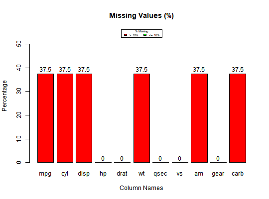

ds_screener will screen data frames and return details such
as variable names, class, levels and missing values. plot.ds_screener
creates bar plots to visualize
in a data frame.
ds_screener(y) # S3 method for ds_screener plot(x, ...)
ds_screenerds_screener returns an object of class "ds_screener".
An object of class "ds_screener" is a list containing the
following components
screener() has been deprecated. Instead
use ds_screener().
# screen data mt <- mtcars mt[, c(2, 8:11)] <- lapply(mt[, c(2, 8:11)], factor) mt[sample(1:nrow(mt), 12), sample(1:ncol(mt), 6)] <- NA ds_screener(mt)#> ----------------------------------------------------------------------- #> | Column Name | Data Type | Levels | Missing | Missing (%) | #> ----------------------------------------------------------------------- #> | mpg | numeric | NA | 12 | 37.5 | #> | cyl | factor | 4 6 8 | 12 | 37.5 | #> | disp | numeric | NA | 12 | 37.5 | #> | hp | numeric | NA | 0 | 0 | #> | drat | numeric | NA | 0 | 0 | #> | wt | numeric | NA | 12 | 37.5 | #> | qsec | numeric | NA | 0 | 0 | #> | vs | factor | 0 1 | 0 | 0 | #> | am | factor | 0 1 | 12 | 37.5 | #> | gear | factor | 3 4 5 | 0 | 0 | #> | carb | factor |1 2 3 4 6 8| 12 | 37.5 | #> ----------------------------------------------------------------------- #> #> Overall Missing Values 72 #> Percentage of Missing Values 20.45 % #> Rows with Missing Values 12 #> Columns With Missing Values 6# visualize missing data k <- ds_screener(mt) plot(k)